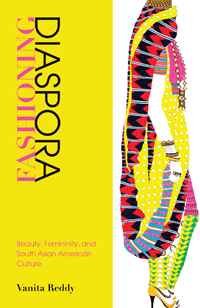

<body bgcolor="#FFFFFF" text="#000000" link="#0000FF" vlink="#CC0000" alink="#CC0000"><center><hr width="350" size="1" align="center" noshade><p>
<i>How South Asian Americans' engagements with Indian beauty and fashion help structure their uneven access to social mobility, capital, and citizenship</i>
<br><hr width="350" size="1" align="center" noshade><p><a href="https://cdcshoppingcart.uchicago.edu/Cart/ChicagoBook.aspx?ISBN=&&PRESS=temple" target="_top">Buy this book!</a> | <a href="https://cdcshoppingcart.uchicago.edu/Cart/Cart.aspx?PRESS=temple" target="_top">View Cart</a> | <a href="https://cdcshoppingcart.uchicago.edu/Cart/Cart.aspx?PRESS=temple" target="_top">Check Out</a></p><p></p></center><!--none//--><h1>Fashioning Diaspora</h1>
<H2>Beauty, Femininity, and South Asian American Culture
</H2>
<h3>Vanita Reddy</h3>
paper: $32.95, Dec 15<BR>EAN:&nbsp;978-1-4399-1155-6<BR><font color=#990033>Available</FONT><font size=-7><br>&nbsp;</font></p><p class="info">cloth: $84.50, Dec 15<BR>EAN:&nbsp;978-1-4399-1154-9<BR><font color=#990033>Available</FONT><font size=-7><br>&nbsp;</font></p><p class="info">e-book: $32.95, Dec 15<BR>EAN:&nbsp;978-1-4399-1156-3<BR><font color=#990033>Available</FONT><font size=-7><br>&nbsp;</font></p></p></td></tr></table>
<BR> <p class="info">280 pp<BR> 6 x 9<BR> 19&nbsp;color&nbsp;illustrations<BR></P> <p class="info"><font size=-7>&nbsp;</font></p><p class="info">
</P><BLOCKQUOTE><p>
"Fashioning Diaspora<i>&nbsp;is essential reading for scholarship on beauty. Reddy introduces a shift the field has long needed, as she reads beauty as embodied practice alongside cultural signifier; as produced within networks of social power and yet complicating them with its own disruptive logic. This is an analysis both critical and appreciative of its topic, and in its nuance a fine example of 'why the humanities matter' for making sense of neoliberal, transnational, material realities</i>."—<b>erin Khuê Ninh</b>, Associate Professor, Department of Asian American Studies, University of California, Santa Barbara, and author of&nbsp;<i>Ingratitude: The Debt-Bound Daughter in Asian American Literature</i>
<br />
<br></BLOCKQUOTE>
<p>
In her insightful study, <i>Fashioning Diaspora, </i>Vanita Reddy carefully maps how transnational itineraries of Indian beauty and fashion shaped South Asian American cultural identities and racialized belonging from the 1990s through the first decade of the twenty-first century. She observes how diasporic subjects engage with and respond to various encounters with Indian beauty and fashion. <br>
<p>One of the first books to consider beauty and fashion as a point of entry into an examination of South Asian diasporic public cultures, <i>Fashioning Diaspora</i> examines a range of literature, visual art, and live performance. Through careful analyses of novels by Bharati Mukherjee and Jhumpa Lahiri, young adult literature, performance art by Shailja Patel, beauty and adornment practices, as well as objects of popular culture including an Indian American fashion doll, Reddy challenges fashion and beauty as a set of dematerialized, overly commodified cultural practices. She argues instead that beauty and fashion structure South Asian Americans' uneven access to social mobility, capital, and citizenship, and she demonstrates their varying capacities to produce social attachments across national, class, racial, gender, and generational divides.<b>
<br /></b>
<br>
<P CLASS="top"><A HREF="#top">BACK TO TOP</A></P>&nbsp;
<BR>&nbsp;
<h2>Reviews</h2>
<p>
"Fashioning Diaspora <i>is an extraordinary intervention into the joint fields of Asian American studies and feminist and queer theory. Reddy makes important contributions, and her book is distinguished by fresh, original readings of a diverse archive of South Asian American public culture. This innovative constellation of texts not only enables us to see how the archive constitutes a historical source for narratives of South Asian migration but also produces a state of feeling: what she argues is the feeling of beauty.</i>"—<b><i>Bakirathi Mani</i></b>, Associate Professor, Department of English Literature, Swarthmore College, and author of&nbsp;<i>Aspiring to Home: South Asians in America</i>
<br />
<br>
<p>
"<i>Vanita Reddy has now made it very difficult to think about the South Asian diaspora without paying attention to the subjects, objects, discourses, and practices of beauty that animate it. Moving seamlessly from discussions of the 'exceptional beauty' of literary heroines like&nbsp;Bharati Mukherjee's Jasmine&nbsp;to the transformation of Delhi and Mumbai into new fashion capitals, Reddy's compelling readings and vast archive of 'beautiful forms' leave us much wiser about how aesthetic desires and demands have shaped South Asians' everyday practices of belonging.</i>"—<b><i>Thuy Linh Nguyen Tu</i></b>, Associate Professor of Social and Cultural Analysis, New York University, and author of&nbsp;<i>The Beautiful Generation: Asian Americans and the Cultural Economy of Fashion</i><br>
<p>
<br />
<br>
<P CLASS="top"><A HREF="#top">BACK TO TOP</A></P>&nbsp;<P>
</P><BR>&nbsp;
<H2>About the Author(s)</H2><p>
<b>Vanita Reddy</b> is an Assistant Professor of English at Texas A&M University.
<br>
<P CLASS="top"><A HREF="#top">BACK TO TOP</A></P>
<p><h2>Subject Categories</h2><A HREF="/tempress/asian.html" TARGET="_top">Asian American Studies</a><BR><A HREF="/tempress/gender.html" TARGET="_top">Gender Studies</a><BR><A HREF="/tempress/cultural.html" TARGET="_top">Cultural Studies</a><BR><A HREF="/tempress/literature.html" TARGET="_top">Literature and Drama</a>
</p>
<P><I><a href="http://www.temple.edu/tempress/asam_history.html" onMouseOver="window.status='Click for other books in this series!'; return true;" onMouseOut="window.status="; return true;" target="_top”><p>
Asian American History and Culture
<br>
</p><p>
Founded by Sucheng Chan in 1991, the <i>Asian American History and Culture</i> series has sponsored innovative scholarship that has redefined, expanded, and advanced the field of Asian American studies while strengthening its links to related areas of scholarly inquiry and engaged critique. Like the field from which it emerged, the series remains rooted in the social sciences and humanities, encompassing multiple regions, formations, communities, and identities. Extending the vision of founding editor Sucheng Chan and emeriti editor Michael Omi and David Palumbo-Liu, series editors K. Scott Wong, Linda Trinh Võ, and Cathy Schlund-Vials continue to develop a foundational collection that embodies a range of theoretical and methodological approaches to Asian American studies.
<br />Prospective authors should contact Senior Editor Aaron Javsicas at Temple University Press to discuss their work in progress for inclusion in the series.
<br />
<br></p>
<p align="center"><a href="https://cdcshoppingcart.uchicago.edu/Cart/ChicagoBook.aspx?ISBN=&&PRESS=temple" target="_top">Buy this book!</a> | <a href="https://cdcshoppingcart.uchicago.edu/Cart/Cart.aspx?PRESS=temple" target="_top">View Cart</a> | <a href="https://cdcshoppingcart.uchicago.edu/Cart/Cart.aspx?PRESS=temple" target="_top">Check Out</a></p><p><font face="Arial" size="1"><a href="copyright.html" onMouseOver="window.status='Web Copyright Policy';return true;" onMouseOut="window.status=''" title="Web Copyright Policy">&copy;</a> <a href="http://www.temple.edu" target="new" onMouseOver="window.status='Link to Temple University home page';return true;" onMouseOut="window.status=''" title="Link to Temple University home page">Temple University</a>. All Rights Reserved. http://www.temple.edu/tempress/titles/2328_reg.html</font></p>